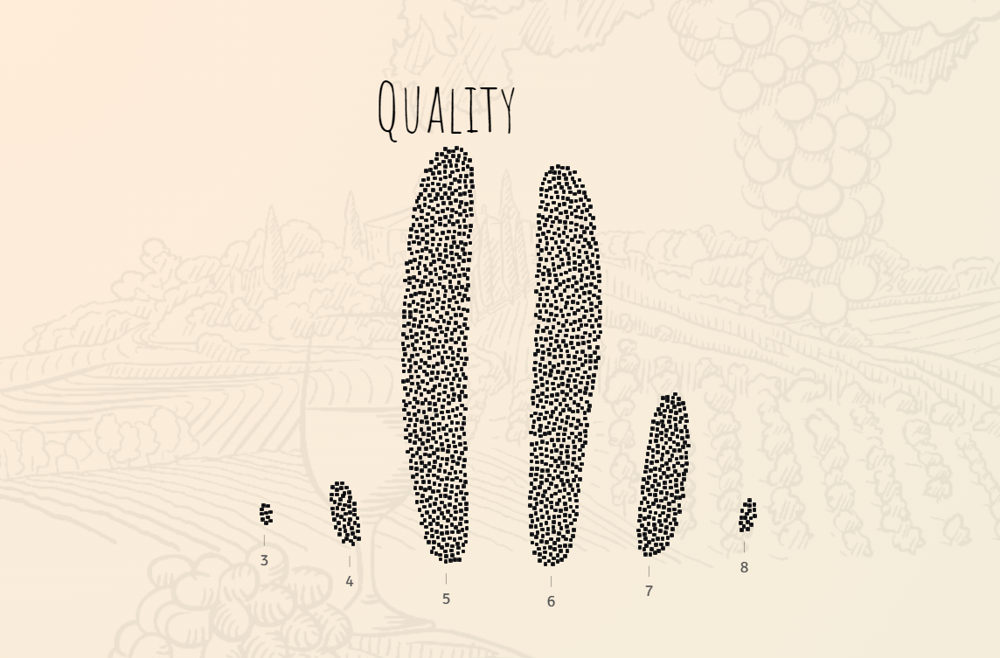
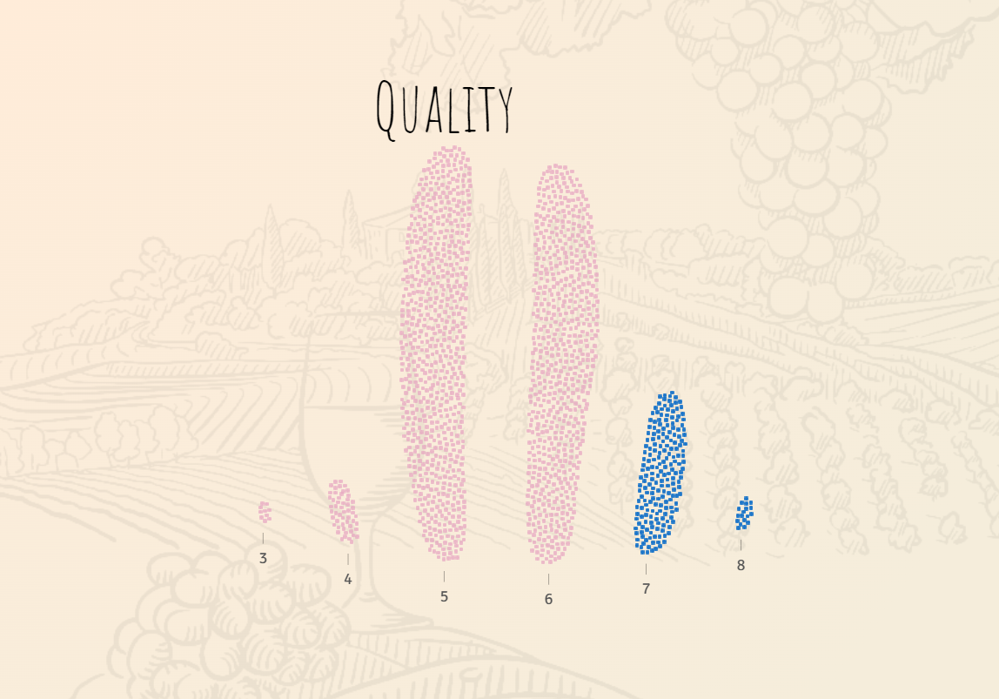
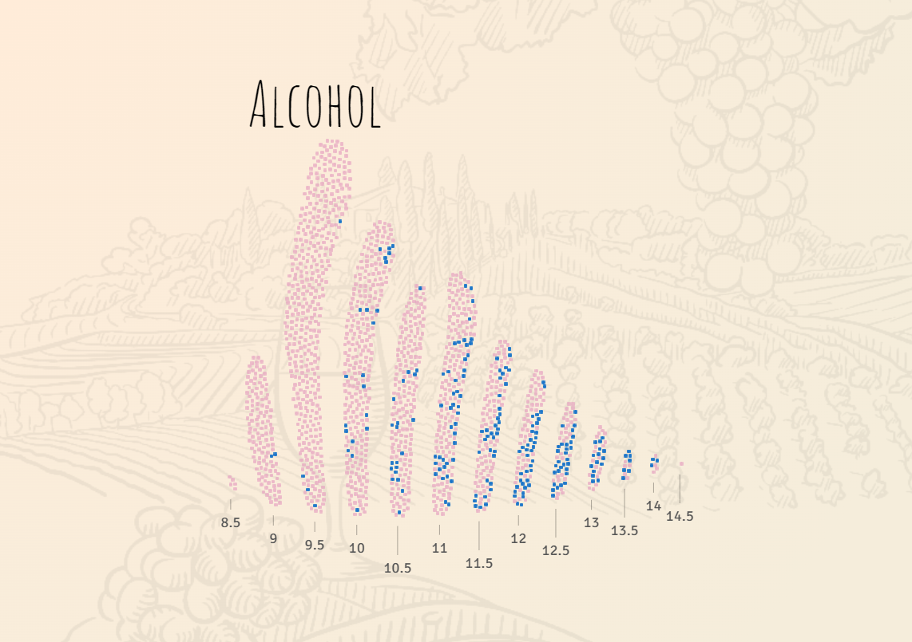

Information Visualisation
Quality graph:
Structure:XY
Mark: dot
X-Quality Scale (1-10), Y: Stack
Low Quality vs High Quality:
Structure:XY
Mark: dot
X-Quality Scale (1-10), Y: Stack
Color: Blue-Above 7, Pink- Below-7
Alcohol Visualisation
Structure:XY
Mark: dot
X-Alcohol Percentage, Y: Stack
Color:Quality binary, Blue-Above 7, Pink- Below-7
Alcohol vs Quality Graph
Structure:XY
Mark: dot,line
X-Alcohol Percentage, Y: Average Quality
Color:Quality binary, Blue-Above 7, Pink- Below-7